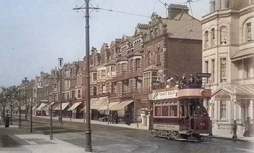

The electric trams originally used a ground level power supply, then later changed (due to safety reasons) to petrol powered dynamos, and finally to over-head wires.[8]
The tramlines were removed in 1928 to make way for trolleybuses which were in use until 1959.

Tram on the south end of Devonshire Road, circa 1908
© Sussex PhotoHistory